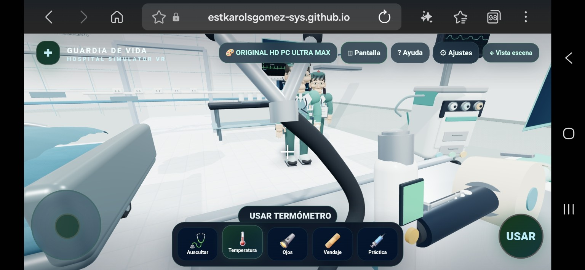

Puedes explorar tocando las tarjetas o activar la cámara para señalar con la mano.
Guía ilustrada

Imágenes tomadas de las capturas compartidas del juego. Las acciones de las imágenes son ejemplos de orientación, no una demostración de que el control físico haya sido probado.